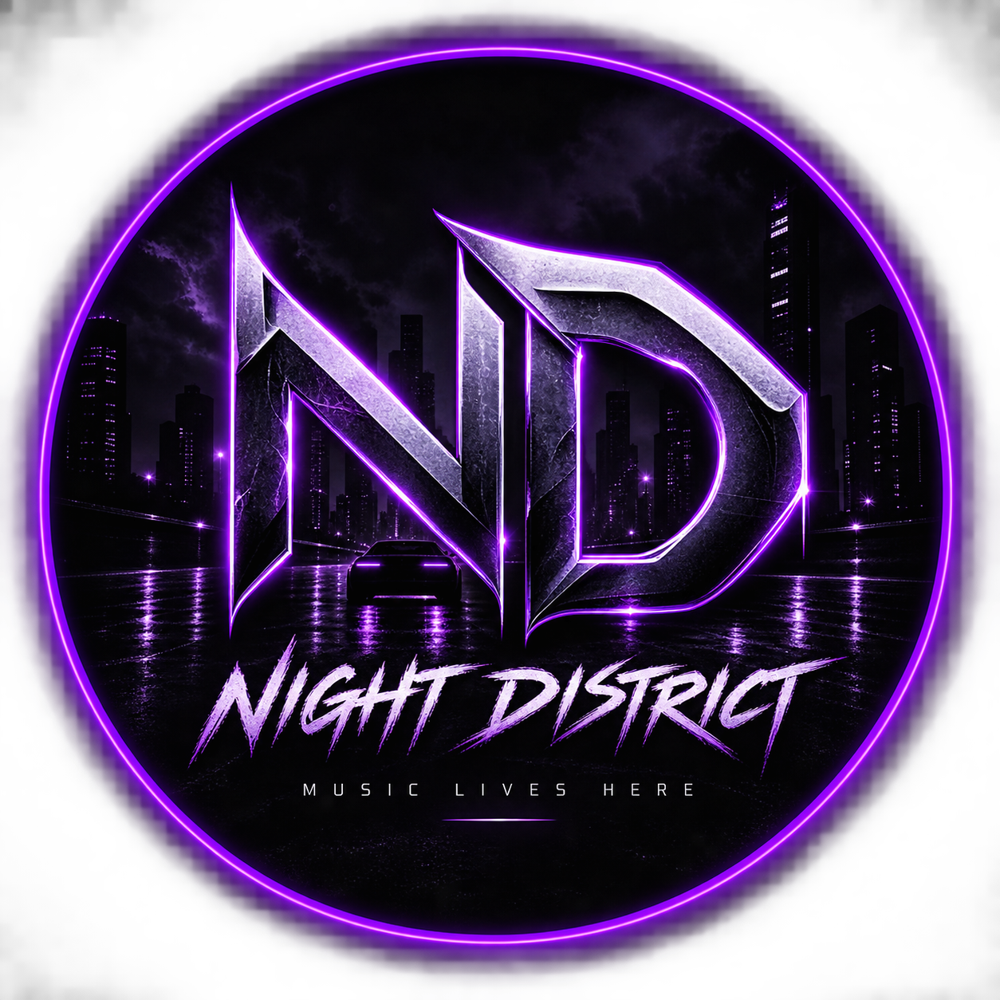

Night DistrictDARK MUSIC • NIGHT DRIVE • URBAN SOUND
Музыка ночи. Глубокий бас. Атмосфера скорости.
▶ Слушать музыкуОфициальные треки Night District
Night District — музыка ночного города, скорости и тёмной атмосферы.
Новые треки и официальные релизы.
▶ YouTube